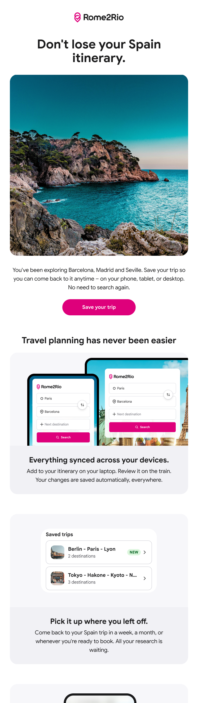
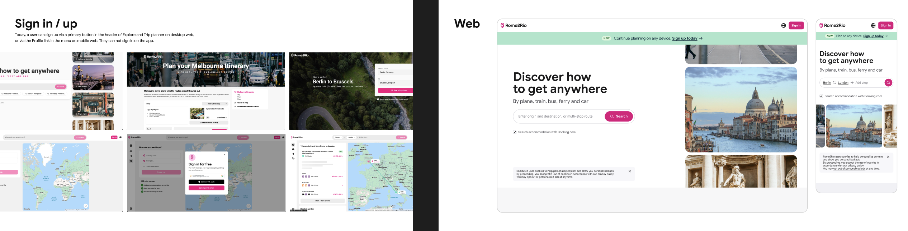
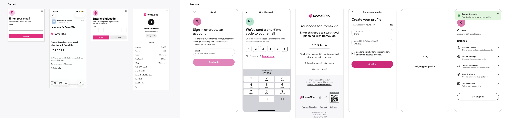
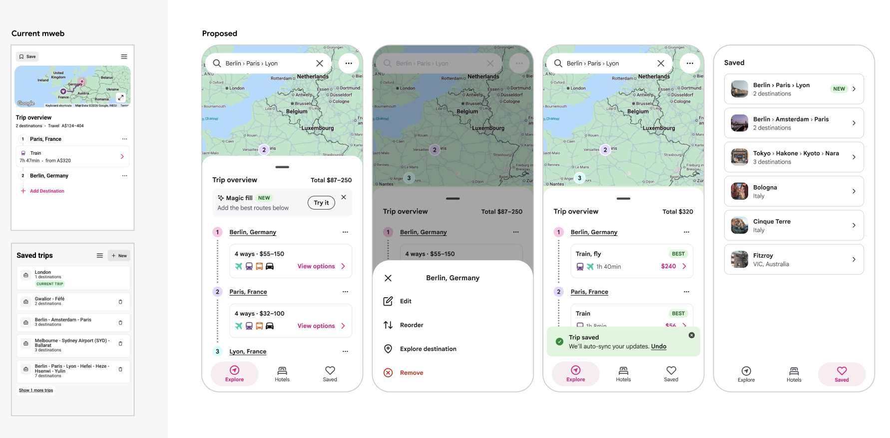

Rome2Rio · 2026 H2
Rome2Rio couldn't tell when the same person came back. I led the strategy to get more of our travellers to log in, and logged-in users now return at 9 times the rate of anonymous ones.
My role
Product Design Lead
Stakeholders
Leadership, product, engineering, marketing
Outcome
64% return rate (logged-in vs 7.2% anonymous)
Most sessions were anonymous so cookies were the only way to recognise anyone, and cookies don't follow people across devices. Someone who researched a trip on desktop and came back on mobile looked like two different people. We had no real idea who our repeat customers were and nothing to offer them like saved trips or price alerts.
Logged-in users returned 64% of the time each week against 7.2% for anonymous users, which is 9 times more. The people we wanted were already coming back. We just couldn't see them or give them a reason to stay, and an account fixes both.


Sign-up and onboarding – Redesigned the whole account creation flow. Google and Omio come first with email as a fallback, and traveller details and preferences are collected as part of signing up instead of as a separate chore.
Core features that drive value – Save trips for later, price drop alerts for when fares fall, traveller profiles that pre-fill names and ages in every booking, and Q&A where people ask route questions and share tips.
Email system – Built a follow-up sequence that points out what people might be missing, like saved trips, empty preferences or unanswered questions, and slowly improves each account over time.


"Logged-in users return at 9 times the rate of anonymous users. So the real question was how to keep the customers we already had."
This started as an insight with no brief. I built the case through research then ran a workshop with leadership and product on what travellers gain from an account and what holds them back. It is now a funded company mission with a measurable target.
I picked logged-in session share as the measure instead of accounts created because it shows whether travellers actually come back, and that is where the revenue is. I lead the mission with my own pod of design, frontend, backend, app and data, with a shared ranking, a Kanban board and ways of working that fit around dependencies between teams.